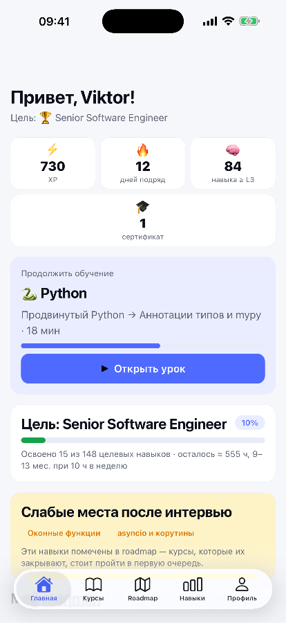
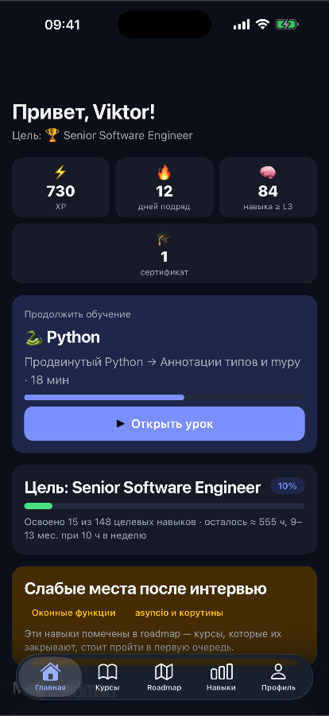
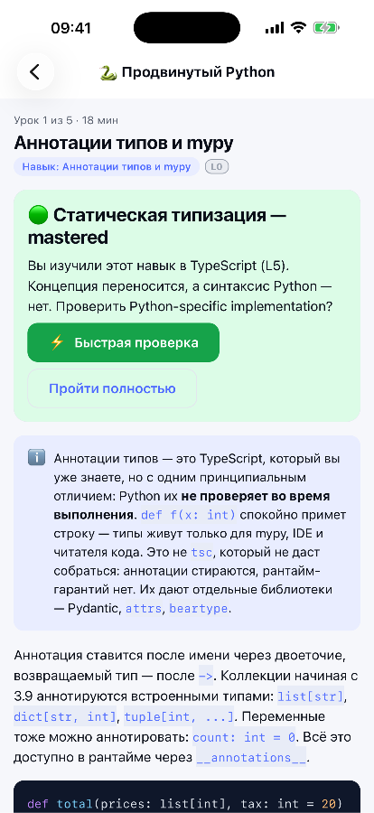
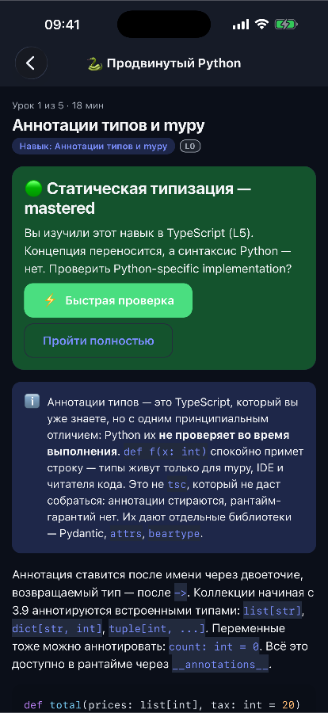
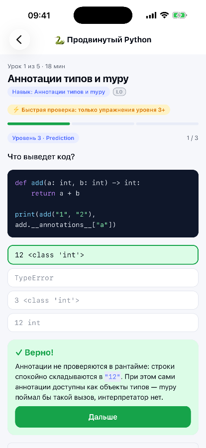
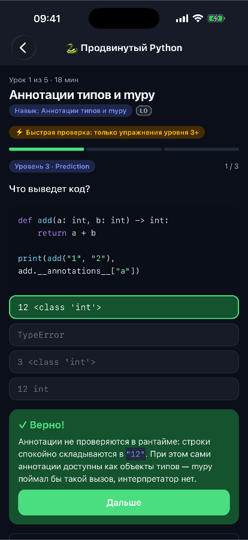
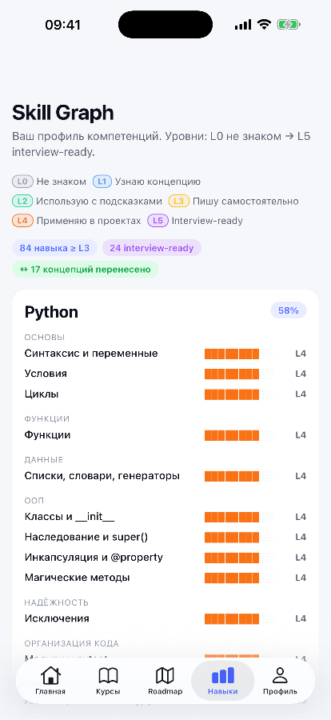
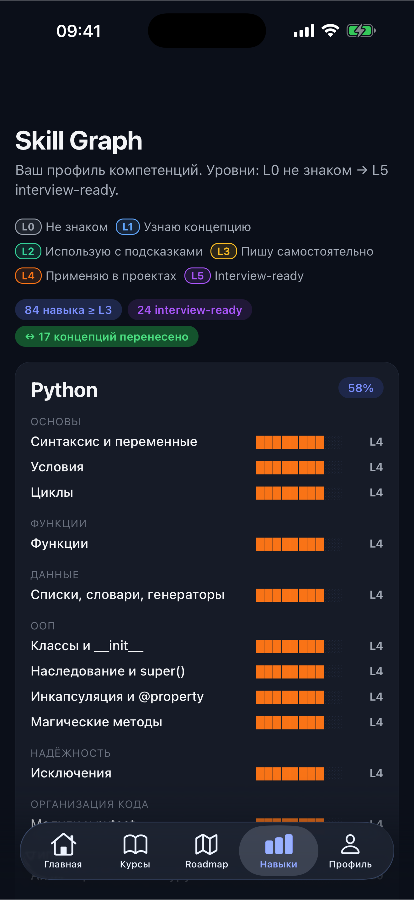

What it looks like








What it does
-
A skill graph, not a course list
246 skills across 28 technologies, each from L0 to L5, with prerequisites between them. Courses exist to close gaps in the graph, so finishing one is a side effect, not the point.
-
What you know carries over
23 universal concepts link the languages. Learn classes and inheritance in JavaScript and the Python lesson only checks the syntax; declarative UI from React counts towards SwiftUI and Compose.
-
A roadmap you can argue with
Nine goals, courses ordered by their prerequisites. Move them, drop them, and choose how deep each one goes, from Beginner to Senior. The time estimate comes from the courses' hours at ten hours a week.
-
Five levels of practice
Recognise the missing piece, assemble code from blocks, predict the output, fix working code, then build something in a workspace with files and a terminal.
-
Code that actually runs
JavaScript executes on the device against real tests; SQL runs on a built-in engine. The terminal understands node, npm, git, pytest and docker well enough to practise the everyday commands.
-
A project per course
Each course ends with a project you can publish to your own GitHub with your own token. Without a token, publishing is simulated and the app says so.
-
Interview practice
Questions for every goal, answers scored by how many of the key ideas they cover — by keyword, not by an AI. The skills you miss go back into the roadmap as weak spots.
What's in it
27 courses, 84 modules, 234 lessons and 1,476 exercises — about 744 hours if you did every one of them, which is exactly what the app is built to spare you.
- Python
- SQL & PostgreSQL
- FastAPI
- Docker & CI/CD
- Cloud, Kubernetes & Terraform
- Redis, Kafka & events
- Architecture & System Design
- Application security
- Performance & SRE
- AI & LLMs in production
- Algorithms
- Operating systems & networks
- Product analytics & A/B tests
- JavaScript
- TypeScript
- React
- Vue
- React Native
- Swift, iOS & macOS
- Kotlin & Android
- Electron
- Rust & Tauri
- C#, .NET & Windows
- Java & the JVM
- Git & GitHub
- HTTP & REST
- Testing
How it works
-
Say where you are
Pick a role and a level, then adjust technology by technology. A frontend developer with ten years behind them starts with JavaScript, TypeScript, React, Vue, Git, HTTP and testing already credited — none of it is taught again.
-
Pick a goal
The goal sets the target level for every skill it needs. Senior Software Engineer asks for 148 of them, across 26 courses; the Skill Gap screen shows which you have and which you don't.
-
Study only the gap
Lessons you already know are marked as known, ones whose idea you learned in another language only check the syntax, and every module can be skipped by passing its test. What is left is what you actually need.
-
Show it
Finish the project, publish it, collect the course certificate, then run the interview simulator for your goal. Whatever it catches becomes the next thing on the roadmap.
Where the data lives
On your device, in the app's own private storage. There is no account and no sync; to move to another phone, Профиль → Скопировать копию on the old one puts your progress on the clipboard as text, and Восстановить из копии on the new one takes it back. A GitHub token, if you give one, is kept separately in the iOS Keychain and never goes into a backup.
The app has no backend and reports nothing. The one network request it can make is the
one you ask for: publishing a finished project, straight from your device to
api.github.com with your own token — see the
privacy policy.
Getting it
It is in open beta on TestFlight. Install Apple's TestFlight app, open the link, and IT Skills installs alongside your other apps.
Android and a browser version run from the same code and are not published yet.
What it isn't
Not a compiler for every language. Only JavaScript and SQL actually run. Python, Swift, Kotlin, Java, C#, Rust and the rest are checked by the structure of your code, and the output you see is the one written into the lesson — which is why those exercises have no Run button: the app does not pretend to execute what it cannot.
Certificates are issued by the app on your device: a record of what you finished, not a qualification anyone can verify. The lessons were written with AI assistance. Every exercise's reference solution is checked automatically on each change, but not every page of theory has been read by a person yet — if you spot a mistake, tell me.